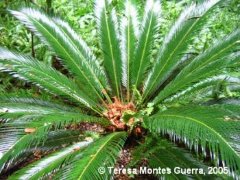
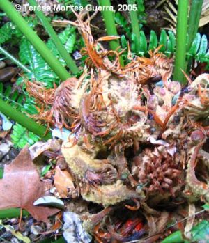

|
Cycas
revoluta Thunb., Verh. Holl. Maatsch
Weetensch. Haarlem 20: 424, 426 (1782)
|
Cicadáceas |
| Palmera del sagú, cica | Arbusto palmiforme |
|
Planta
perennifolia de porte arbustivo, de1-3 m
(aunque puede alcanzar los 7m*), con aspecto de
palmera, dioica, con el tronco sin ramificar, y
numerosos brotes basales; especie
de crecimiento lento.
Hojas pinnatisectas, reunidas en roseta
apical, persistentes. segmentos de 10-25 cm,
lineares, rígidos, punzantes y color verde
amarillento brillante; pecíolos de sección
tetragonal.
Estróbilos. Los individuos masculinos
llevan en el centro de la corona de hojas un
estróbilo masculino, formado por cientos de brácteas
dispuestas en espiral, cada una de éstas con un
estambre, en cuya parte inferior aparecen numerosos
sacos polínicos soldados en sinangios. Los
individuos femeninos portan un estróbilo femenino,
formado por numerosos carpelos pelosos, cada uno de
los cuales lleva en su mitad inferior varios
primordios seminales anaranjados.
Fructificación. La hembra forma una única piña, que ocupa la posición central, en el ápice, de color pardo claro y tomentosa, con numerosos primordios seminales de color rojizo. |
 Ejemplar femenino del patio interior de la Facultad de Biología (Edificio Verde) en 2005 |
|
 |
Observaciones:
Etimológicamente Cycas,
proviene del griego kykos, que significa palmera; el
epíteto específico revoluta significa en latín
"vuelto hacia fuera" en referencia a los márgenes de
los folíolos.
Su principal función es decorativa, como planta ornamental en parques públicos y jardines particulares. Algunos pueblos de Papúa Nueva Guinea, como los sawiyano y los youna, utilizan especies de Cicadales como principal fuente de alimentación, extrayendo la harina de la médula, llamada harina de sagú.
La multiplicación de esta especie es por semillas e
hijuelos.
Ver también: Las cicas en Sevilla |
| Área de origen.- Planta endémica de las Islas Ryukyu, Mitsuhama Ito ,Satsuma y Kiushu, en Japón. Actualmente, su distribución como planta ornamental está confinada básicamente a zonas tropicales y subtropicales. | |
| Uso en el campus: un sólo ejemplar en todo el campus de Reina Mercedes, en el patio central de los laboratorios de la Facultad de Biología. Plantado hacia el año 1999. | Localización*: Zona
central del Campus
Patio interior (Este) del Edificio Verde |
| *
The Cycad page: http://plantnet.rbgsyd.gov.au/cgi-bin/cycadpg?taxname=Cycas+revoluta |
|
| Teresa Montes Guerra (2005) & Carlos Romero Zarco (2006) | |